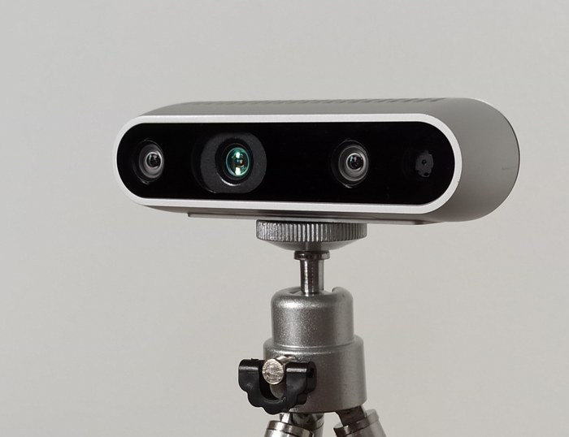
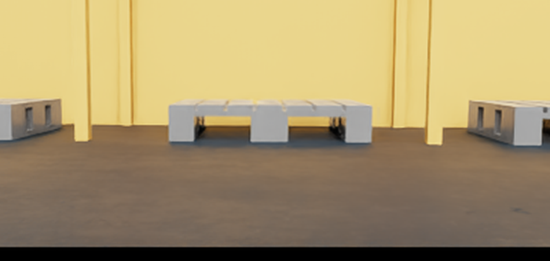

Jetson 전 코어 부하에서도 명령 주기 최대 30 ms, 카메라 IMU 빠진 측정 0

Jetson Orin Nano Super
MCU로 명령을 보내는 주기 20 ms
5분씩 측정한 최대 간격

RealSense D435i (Jetson에 연결)
IMU 2분 기록
자이로 400 Hz, 가속도 200 Hz
빠진 측정 0

RPLIDAR A2M12
장비가 아직 없어 연결하지 못함
도착하면 노트북과 Jetson에 연결 예정
인식 카메라에도 찍히던 계획 경로 표시선을 운용 화면에만 그려 없앰


카메라에 찍힌 표시선